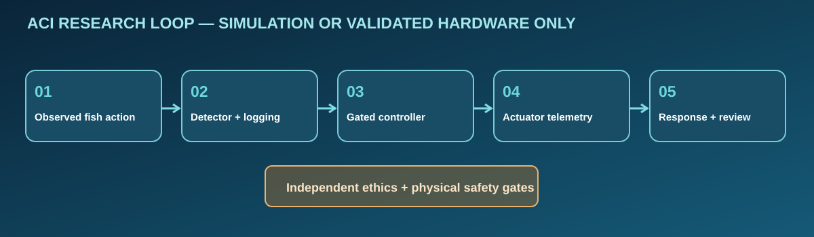

Animal–Computer Interaction workflows
Source:vignettes/articles/aci-workflows.Rmd
aci-workflows.RmdAnimal–Computer Interaction (ACI)
ACI research asks how an animal’s actions may be sensed, interpreted and responded to through computing systems. Here the package provides measurement and audit utilities, not independent evidence of animal agency, preference or welfare.

Conceptual only. The illustrated control loop must not be interpreted as an independently certified live hardware safety system.
Event and latency telemetry
The ACI functions help audit external time-stamped data across behaviour, detection, command, actuator and response events.
-
aqt_aci_trials(): declared interaction trials. -
aqt_aci_loop_metrics(): completeness and correctness of observed interaction loops. -
aqt_aci_latency_summary(): reaction and device/loop latencies.
Distinguish detected false triggers, missing actuator acknowledgements and true observed response. Event timing must be validated externally.
Choice and access
-
aqt_aci_choice_log(): choices and actual options offered. -
aqt_aci_choice_summary(): descriptive option selection patterns. -
aqt_aci_access_inequality(): account for unequal access to real multi-option choice opportunities.
Choice frequency does not prove an animal’s conscious preference or welfare benefit.
From simulation to responsible experiments
Use the existing local/offline software dry-run and logging protocols for engineering research. Any physical controller needs its own ethics, operator approval, emergency-stop verification, failure containment and biological review.
A static GitHub Pages site cannot actuate physical equipment. No remote live-device control interface is included here.
Read: source protocol, source protocol and source protocol.